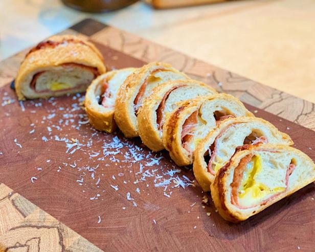

Pepperoni Rolls

Pepperoni rolls are a dish that's near and dear to me. My grandfather taught
me how to make them. They were a staple in his childhood and definitely
were in mine as well. It's a perfect but simple food. The pepperoni gives it
a nice kick, the mozzarella compliments the pepperoni, and it's all contained
in a nice flaky roll. It also goes well with a nce side of Marinara sauce for
dipping!
Pro Tip: If you're in a cooking mood. The vodka sauce I have listed on here
is a even better companion for the pepperoni rolls as well. Try it, you won't
regret it.
Ingredients
- One pound of pizza dough
- Eight ounces of Pepperoni
- Eight ounces of full fat Mozzarella
- Italian seasoning
- Garlic powder
- Three tablespoons of melted butter
Steps
- Flour a cutting board and roll out your dough into a rectangle.
- Season your dough with Italian seasoning and Garlic powder.
- Slice Pepperoni and Mozzarella. Shingle your pepperoni on the dough in rows. In between your
pepperoni rows put a row of mozzarella. Do that until your dough
is covered.
- Roll your dough up (kinda like a carpet).
- Put it on a baking sheet. Put it in the oven at 400 degrees and bake
until the dough is golden brown.
- When the rolls are done brush the melted butter on the rolls and
let them sit for 5 minutes. Enjoy!